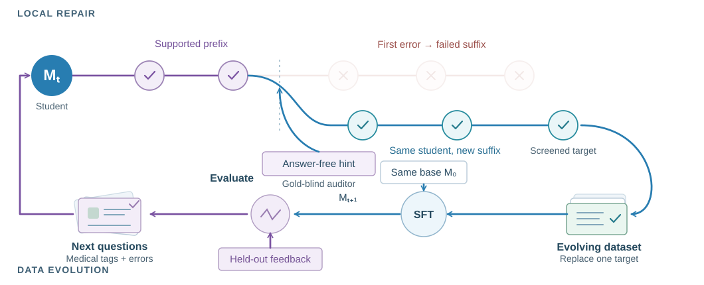

Harder to repair.
More useful to learn.
| Longest 8k | Random 8k | |
|---|---|---|
| Repair success | 55.70% | 67.50% |
| After training | 66.78% | 64.35% |
Mean benchmark accuracy. Length and difficulty are not separated.
Medical knowledge repairs a failed trace; independent feedback decides what the student learns next.
KNOWLEDGE NAVIGATION
Schematic
The dataset evolves. Each SFT round starts from the same base model M₀.
What the experiments reveal
| Longest 8k | Random 8k | |
|---|---|---|
| Repair success | 55.70% | 67.50% |
| After training | 66.78% | 64.35% |
Mean benchmark accuracy. Length and difficulty are not separated.
Seven-benchmark mean · Qwen3.5-9B
Base → round 3. Better training fit need not transfer.

SFT only
Seven-benchmark mean accuracy (%)
pp: percentage points. Seven medical multimodal benchmarks.
The paper and project page are available. Implementation and training-data files are not released.

@misc{wang2026medevo,
title = {MedEvo: Medical Reasoning Evolution through Knowledge Navigation},
author = {Wang, Xiaoliang and Chen, Zhuo and Zheng, Chuanyang and
Wang, Quanbin and Lao, Jiangwei and Liu, Yingao and Liu, Jiajia and
Cao, Jinming and Lin, Honglin and Lu, Zhihong and Jin, Hao and
Wang, Jian and Wu, Lijun},
year = {2026},
url = {https://pork-pay.github.io/MedEvo/}
}